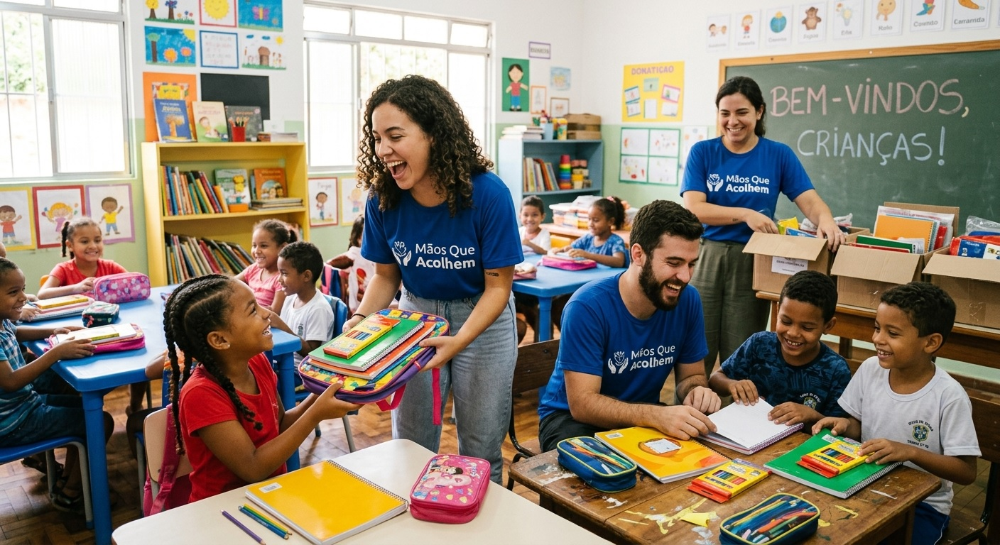

Transformando Vidas Através da Solidariedade
Nossa ONG atua ativamente no suporte a comunidades em situação de vulnerabilidade social. Desenvolvemos projetos focados em educação, capacitação profissional e segurança alimentar, buscando construir um futuro mais justo e com igualdade de oportunidades para todos.

Estabeleça Contato Conosco
Quer fazer parte da nossa missão? Seja um voluntário, parceiro ou doador. Entre em contato conosco pelos canais abaixo:
- Endereço: Avenida das Mãos que Acolhem, 123 - Centro, Curitiba - PR
- E-mail: contato@ongmaosqueacolhem.org
- Telefone/WhatsApp: (41) 99999-0000
- Horário de Atendimento: Segunda a Sexta, das 09h às 18h